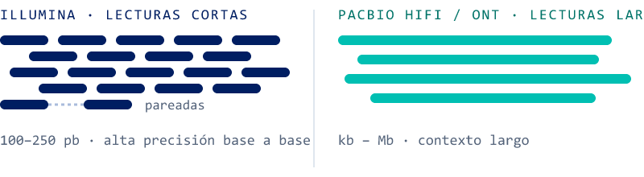
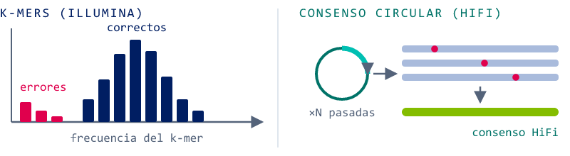
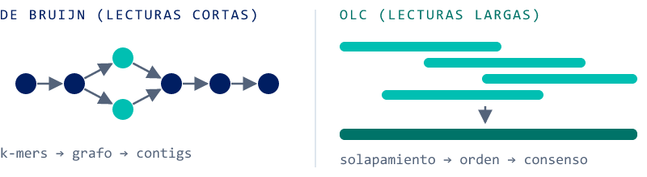
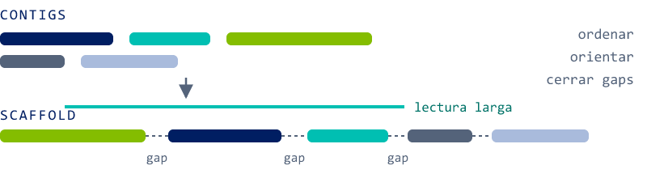
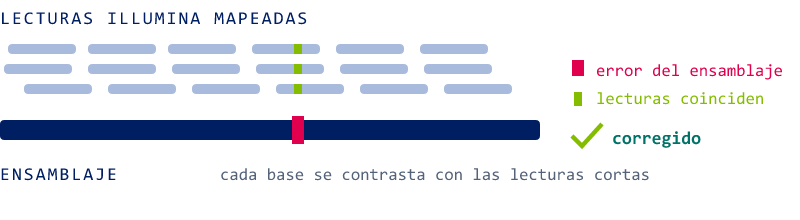
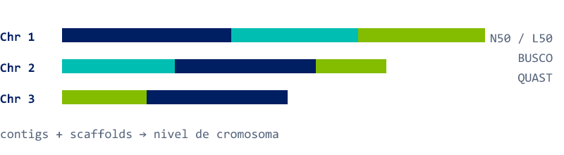
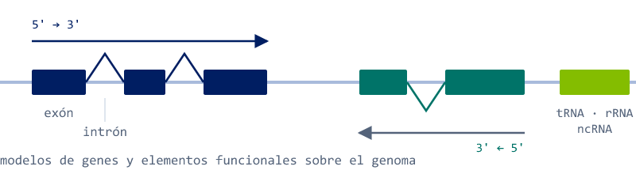
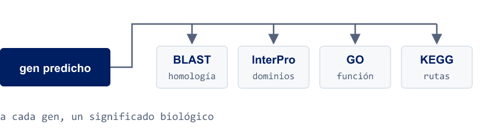
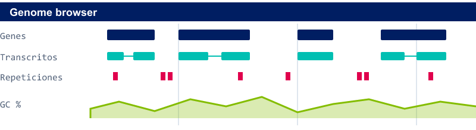

Un ensamblaje de novo reconstruye el genoma de un organismo sin apoyarse en una secuencia de referencia previa. Es el camino obligado para organismos no modelo, cepas muy divergentes de la referencia disponible o proyectos donde la propia referencia es el resultado que se busca: un genoma nuevo, continuo y anotado, sobre el que después se harán todos los análisis.
La idea del enfoque híbrido es sencilla. Las lecturas cortas de Illumina (100–250 pb, pareadas) son muy precisas base a base, pero demasiado cortas para resolver regiones repetitivas. Las lecturas largas de PacBio HiFi u Oxford Nanopore (de kilobases a megabases) atraviesan esas regiones y dan continuidad, a cambio de un perfil de error distinto. Usadas juntas, cada tecnología cubre el punto débil de la otra. El proceso tiene dos fases: primero se construye el genoma (pasos 1 a 6) y después se le da sentido (pasos 7 a 9).
Fase 1 · Construir el genoma
1. Secuenciación
Todo empieza con dos tipos de datos complementarios generados a partir del mismo ADN. En Illumina se obtienen millones de lecturas cortas pareadas de alta precisión; en PacBio HiFi u Oxford Nanopore, lecturas largas que conservan el contexto de cada fragmento. En Macrogen las tres plataformas — NovaSeq X Plus, PacBio Revio y Nanopore PromethION — están bajo el mismo techo, de modo que ambas fracciones salen del mismo lote de ADN y con criterios de calidad coherentes.

La calidad del ADN de partida marca todo lo que viene después: para lecturas largas importan la integridad y el tamaño molecular, no solo la concentración. Los requisitos están en nuestros criterios de calidad de muestra para long reads (PDF).
2. Corrección de errores
Antes de ensamblar se limpian las lecturas. En Illumina la corrección se basa en k-mers: se cuentan todas las subsecuencias de longitud k y se observa que los k-mers que aparecen muchas veces son genuinos, mientras que los raros son casi siempre errores de secuenciación. En lecturas largas la corrección viene del consenso de varias pasadas sobre la misma molécula — en PacBio, el consenso circular (CCS) que da lugar a las lecturas HiFi.

3. Ensamblaje
Aquí las dos tecnologías siguen estrategias distintas que después se combinan. Para lecturas cortas se construye un grafo de De Bruijn: los k-mers son los nodos, los solapamientos exactos las aristas, y recorrer el grafo produce contigs. Para lecturas largas se usa Overlap-Layout-Consensus (OLC): se detectan los solapamientos entre lecturas, se ordenan en un trazado y se calcula la secuencia consenso. El resultado en ambos casos son contigs, tramos continuos de secuencia sin huecos.

4. Reducción de gaps y scaffolding
Los contigs se ordenan y orientan en scaffolds más grandes. La información de las lecturas largas — y la de los pares de lecturas cortas — permite saber qué contig va después de cuál y en qué sentido, y muchos de los huecos entre ellos se cierran o se reducen. El ensamblaje gana continuidad: menos piezas, más largas.

5. Pulido con Illumina
Las lecturas cortas, de alta precisión, se mapean sobre el ensamblaje y cada base se contrasta con las lecturas que la cubren. Donde las lecturas coinciden entre sí pero no con el ensamblaje, es el ensamblaje el que estaba equivocado: se corrigen los indels y SNPs residuales. Con lecturas HiFi (calidad Q30 o superior) este paso aporta menos; con Nanopore sigue siendo muy recomendable.

6. Ensamblaje final
El resultado es un genoma continuo y de alta calidad — contigs más scaffolds, idealmente a nivel de cromosoma. Es la referencia sobre la que se construye todo lo demás, y por eso hay que medir cuán buena es antes de seguir.

- N50 / L50: la longitud del contig o scaffold a partir del cual se acumula la mitad del genoma (N50) y cuántas piezas hacen falta para llegar a ella (L50). Más N50 y menos L50 es más continuidad.
- BUSCO: qué fracción de un conjunto de genes esperados en el linaje aparece completa, fragmentada o ausente. Mide completitud biológica, no solo continuidad.
- QUAST: el resumen estadístico estándar del ensamblaje: tamaño total, número de contigs, N50, contenido GC, gaps.
Fase 2 · Darle sentido
7. Predicción de genes
Sobre el genoma ensamblado se localizan las regiones codificantes y los elementos funcionales. Los predictores construyen modelos de genes — exones, intrones, inicio y fin de la traducción — combinando señales de la propia secuencia con evidencia externa como transcritos o proteínas de organismos cercanos. También se anotan los elementos no codificantes: tRNA, rRNA y otros ncRNA.

8. Anotación funcional
Un gen predicho es, de momento, solo una coordenada. La anotación funcional le asigna significado biológico: búsqueda de homólogos por BLAST, dominios proteicos con InterPro, términos GO que describen su función molecular, proceso y localización, y rutas metabólicas o de señalización en KEGG y Reactome.

9. Genoma anotado
El resultado final es una referencia completa y bien anotada: genes, transcritos, repeticiones, contenido GC y elementos funcionales, organizados en pistas que se pueden navegar en un genome browser y usar directamente en cualquier análisis posterior — resecuenciación de poblaciones, expresión, variantes estructurales, genómica comparativa.

¿Qué plataforma para mi organismo?
El tamaño y la complejidad del genoma determinan la combinación óptima. Estas son las configuraciones que recomendamos con más frecuencia:
| Organismo | Lecturas largas | Qué obtienes |
|---|---|---|
| Bacterias, virus, genomas pequeños | PacBio Microbial (fracción de SMRT cell) | Contigs circulares completos · anotación CDS / rRNA / tRNA |
| Plantas, animales, eucariotas medianos y grandes | PacBio HiFi, ~30× de cobertura | Contigs largos de alta precisión · N50 >10 Mb típico |
| Regiones muy repetitivas o complejas | Nanopore PromethION, lecturas ultralargas | Continuidad a través de repeticiones que otras lecturas no resuelven |
| Cualquiera de los anteriores | + Illumina para el pulido | Corrección de indels y SNPs residuales base a base |
Si dudas entre HiFi, Nanopore o híbrido, el NGS Explorador te guía por la rama de ensamblaje de novo con estas mismas preguntas, y nuestro equipo evalúa cada organismo caso a caso antes de secuenciar.
Cómo lo hacemos en Macrogen
Hacemos el recorrido completo: secuenciamos en Illumina NovaSeq X Plus, PacBio Revio y Oxford Nanopore PromethION, ensamblamos, pulimos y anotamos — y entregamos el reporte con las métricas para que sepas qué tan bueno es tu genoma. Somos Certified Service Provider de PacBio para Revio, con cobertura de HiFi WGS y Microbial de novo, y atendemos en español, en tu zona horaria, desde nuestros hubs de Madrid y Santiago.
¿Quieres ver cómo se ve el resultado? En la sección de reportes de ejemplo tienes el reporte PacBio De Novo Prokaryote (contigs circulares y anotación CDS / rRNA / tRNA) y el de ensamblaje Nanopore (Flye/Canu, Medaka/Pilon, QUAST/BUSCO), además del detalle del servicio en secuenciación de genoma completo.
Preguntas rápidas
¿Necesito lecturas cortas si ya tengo HiFi? No siempre. Las lecturas HiFi ya son de alta precisión, así que el pulido con Illumina aporta poco; con Nanopore, en cambio, el pulido sigue marcando la diferencia. Lo evaluamos con tu proyecto.
¿Cuánta cobertura de lecturas largas hace falta? Para eucariotas medianos y grandes con PacBio HiFi trabajamos habitualmente con unos 30×; en genomas microbianos basta una fracción de SMRT cell. La cobertura de Illumina para el pulido se define caso a caso.
¿Cómo sé si mi ensamblaje es bueno? Mira N50/L50 para la continuidad y BUSCO para la completitud; ambos vienen en nuestro reporte. Un N50 alto con un BUSCO bajo indica un genoma continuo pero incompleto — y viceversa.
Cuéntanos qué organismo quieres ensamblar
Revio · PromethION · NovaSeq X Plus bajo un mismo techo · Certified Service Provider PacBio · evaluación caso a caso antes de secuenciar · soporte en español desde Madrid y Santiago.
Solicitar propuesta de ensamblaje →¿Dudas sobre qué plataforma conviene a tu organismo? Escríbenos a info-spain@macrogen.com o info-chile@macrogen.com · te orientamos en 24 h.